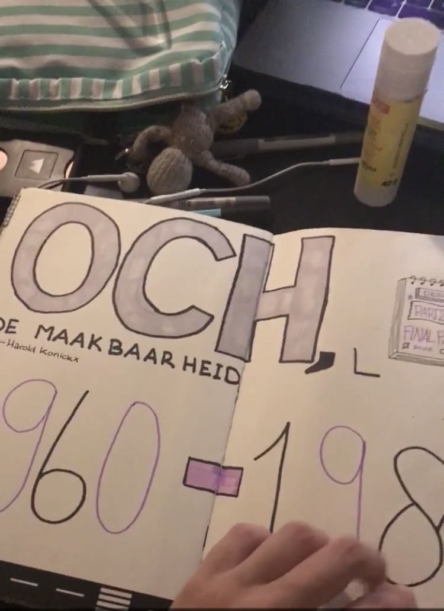
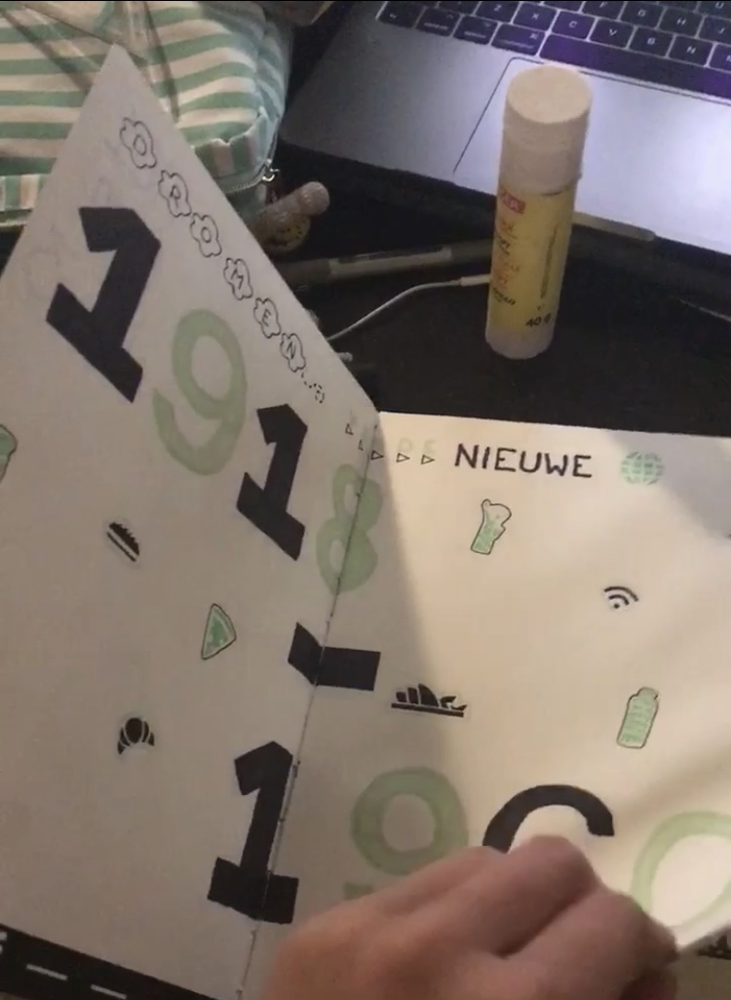

Mijn eerste indruk van dit vak was de letterlijke horror in mijn hoofd, omdat ik nog maar net was geslaagd voor mijn HAVO geschiedenis examen en het niet zag zitten om ooit nog iets met geschiedenis te doen. Uiteindelijk kwam ik erachter dat ik deze geschiedenis juist wel heel leuk vond. Ook de manier waarop werd lesgegeven vond ik leuk. De hoorcolleges waren interessant en de opdrachen waren uitdagend. Ook gingen we naar het Stedelijk museum. Ik houd niet van musea, maar het Stedelijk vind ik dan wel weer van een van de leukere omdat daar moderne kunst hangt en niet alleen maar oudbollige schilderijen.

Ik vond dit vak zo leuk dat ik ook echt heel erg mijn best heb gedaan op de sketchnotes. Zelf vind ik dat ik redelijk normaal creatief ben en er niet perse uitblink, maar bij dit vak voelde dat anders. Ik was zelfs heel erg trots op mijn getekende aantekeningen en het overzicht met kleuren wat ik erin heb gecreeerd mag er wel wezen.
